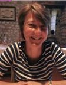

Een gezonde mond, voor nu en juist ook voor later.
Goed kunnen eten, praten en lachen begint bij gezond tandvlees. Aan de Gratamastraat helpt Anna Holtman u daar al ruim dertig jaar bij, met een verwijzing van uw tandarts of gewoon op eigen initiatief.
Herkent u dit?
Een bezoek aan de mondhygiënist kan u van deze klachten afhelpen. Ook bij bepaalde ziektes, zoals diabetes, is een goede mondgezondheid belangrijk.
Heeft u een verwijzing van uw tandarts gekregen? Dan bent u hier op de goede plek.
Zo gaat een eerste afspraak
Gezondheidsvragenlijst
Soms zijn voorzorgsmaatregelen nodig voordat de behandeling kan beginnen. Neem een actueel medicatieoverzicht mee, dat krijgt u bij uw apotheek.
Onderzoek van uw tandvlees
We bekijken samen hoe uw tandvlees ervoor staat, bespreken wat we zien en stellen zo nodig een behandelplan op.
Begroting op papier
Komen de kosten boven de 150 euro, dan krijgt u een schriftelijke begroting. Zo kunt u bij uw verzekeraar nagaan wat vergoed wordt.

Anna begon als tandartsassistente en werkte daarna in een algemene praktijk, een orthodontiepraktijk en een verpleeghuis. In 1994 startte ze haar eigen praktijk.
Aangesloten bij de NVM, het Kwaliteitsregister Mondhygiënisten en de Nederlandse Vereniging voor Parodontologie.
- 1988Driejarige opleiding tot tandartsassistente afgerond
- 1991Afgestudeerd als mondhygiënist in Nijmegen
- ’91–’94Drie jaar werk in een algemene praktijk, een orthodontiepraktijk en een verpleeghuis
- 1994Eigen praktijk aan de Herman Colleniusstraat
- 1999Verhuisd naar de Gratamastraat 22, waar de praktijk nog steeds zit
Ook als u slecht ter been bent
Lukt het niet meer om vanuit uw rolstoel in de behandelstoel te gaan zitten? Dan behandelen we u in uw eigen stoel, mits die gekanteld kan worden.
Mondzorg aan huis
Samen met mondhygiënist Saskia Westerhoff startte Anna Mobiele Mondzorg Groningen. Voor ouderen, volwassenen en jongeren met een verminderde mobiliteit, bijvoorbeeld door ALS, MS of COPD, die niet meer naar de praktijk kunnen komen.
Thuis krijgt u een complete gebitsreiniging, met tips en advies om uw mond gezond te houden.
Ook voor zorgverleners
- Behandeling bij u thuis
- Klinische lessen voor thuiszorginstellingen
- Uitleg en advies voor mantelzorgers
- Offerte op verzoek
Bel tijdens onze werkuren of gebruik het contactformulier. We nemen zo snel mogelijk contact met u op.
Gratamastraat 22, 9714 HS Groningen